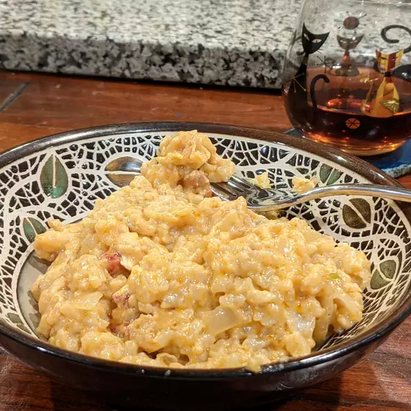

Loster Risotto

Description
Have you ever watched Hell's kitchen? Hell yeah that's where I found out what a Risotto is! Today I will attempt to cook a creamy and rich risotto with lobseter, caramelized onions, and sherry. Hopefully I won't be Gordon Ramsay's idiot sandwich!
Recipe taken from: https://www.allrecipes.com/recipe/245056/lobster-risotto/
Ingredients
- 0.25 cup olive oil, divided
- 2 onions, chopped
- 6 cups chicken broth
- 1 shallot, chopped
- 1 clove garlic, chopped
- 1.5 cups Arborio rice
- 0.5 cup white wine
- 1 tablespoon honey
- 3 tablespoons butter
- 1 cup light cream
- 1 tablespoon paprika
- 1 teaspoon cayenne pepper
- 0.25 cup sherry
- 2 cups cooked lobster meat
- 0.5 cup shredded Parmesan cheese
- 1 pinch salt and ground black pepper to taste
Steps
- Heat 2 tablespoons oil in a large skillet over medium heat; cook and stir onions until light brown and tender, about 20 minutes.
- Bring chicken broth to a boil in a pot; reduce heat to low and keep at a simmer.
- Heat remaining 2 tablespoons oil in a large, flat-bottom pan over medium-high heat. Cook and stir shallot and garlic in the hot oil until fragrant, about 2 minutes. Add Arborio rice to shallot mixture; cook and stir until rice begins to brown, about 3 minutes. Add wine and cook for 1 minute.
- Stir 1 cup chicken broth into rice mixture; cook, stirring constantly, until broth is absorbed. Repeat adding broth, 1 cup at a time, until all the broth is used, stirring constantly until broth is absorbed each time, about 30 minutes.
- Mix honey into onions and cook 5 minutes more.
- Stir butter into rice mixture until melted. Add cream and stir until rice mixture thickens, about 3 minutes. Add paprika and cayenne pepper; stir well. Add sherry and mix well. Stir lobster meat into rice mixture and cook until heated through, about 3 minutes. Mix Parmesan cheese into rice mixture until melted. Add onion mixture and mix well; season with salt and pepper.
Back to home